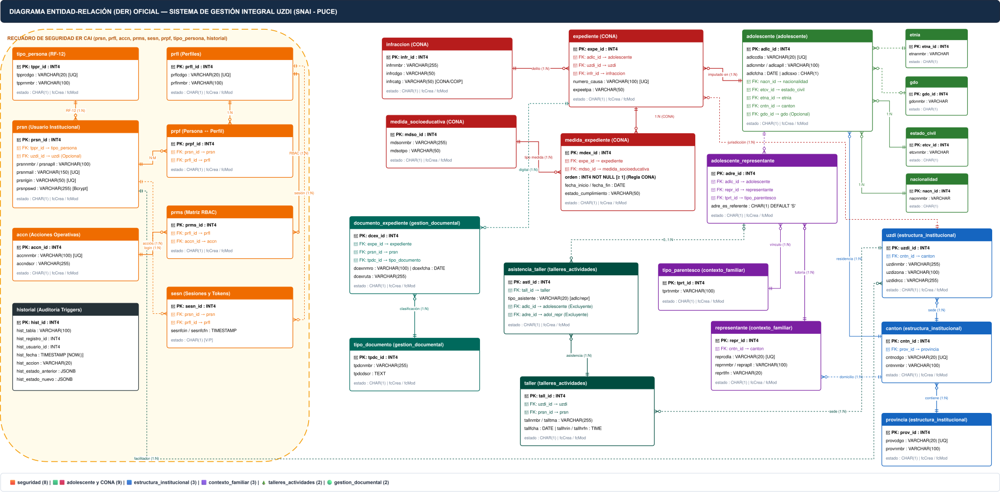

El backend que sigue cada caso UZDI
API REST en NestJS y PostgreSQL para gestionar adolescentes, expedientes judiciales, medidas socioeducativas, familias, talleres y documentos, con permisos por perfil y auditoría de datos.
- Modelo de datos
- Flujo de peticiones
- Seguridad
- Auditoría de datos
- Endpoints
- Despliegue
- Demo en vivo
- Cierre
Paúl Rosero, Alejandro Flores, Joan Santacruz, Joselyn Cadena y Gabriel Aguinaga. PUCE, Ecología Integral 2026.
Diagrama entidad-relación
27 tablas en 6 esquemas de PostgreSQL. Todas llevan borrado lógico (estado V/F) y fechas de creación y modificación.

Abrir completo- seguridad 8 tablas, recuadro ER CAI
- adolescente 9
- estructura_institucional 3
- contexto_familiar 3
- talleres_actividades 2
- gestion_documental 2
Flujo de una petición
El orden en que NestJS procesa cada llamada, desde el frontend hasta la respuesta JSON. Si un paso falla, la petición se corta ahí.
Cliente
Frontend Vue o PostmanBearer JWT
Authorization: Bearer <token>Guard de autenticación
JwtAuthGuard401Guard RBAC de permisos
RolesGuard → seguridad.prms403Validación del DTO
ValidationPipe400Controlador
@Get @Post @Patch @DeleteServicio
Reglas del negocio404 / 409TypeORM y PostgreSQL
27 tablas, DDL v8Trigger de auditoría
fn_registrar_historialRespuesta JSON
{ ok, message, data }
Las etiquetas rojas son el código HTTP con el que se corta la petición en ese paso.
Seguridad y permisos
Los usuarios no se conectan a PostgreSQL: se autentican en la API, que valida sus permisos y usa una sola conexión administrada.
seguridad.prmsuzdi_userAuditoría de datos
Cada INSERT, UPDATE o DELETE dispara un trigger que guarda en seguridad.historial quién, cuándo, qué tabla y los valores antes y después. Es de solo lectura.
PATCH /api/v1/expediente/1| Campo | Antes | Después |
|---|---|---|
| numero_causa | EXP-2026-0042 | EXP-2026-0042 |
| estado_procesal | En proceso | Concluido |
| estado | V | V |
| fcMod | 11:41:29.429 | 11:41:29.489 |
Endpoints principales
Petición y respuesta reales de la API. Toda respuesta exitosa tiene la forma { ok, message, data }; los errores agregan statusCode, path y timestamp.
/api/v1/expediente/1Misma URL, distinta acción según el método200 → data: { id: 1, numero_causa, … }200 → estado_procesal: "Concluido"200 → data: { id: 1, estado: false }Despliegue en Linux y Docker
La base se crea sola con el DDL, el administrador, la matriz de permisos y los catálogos. Lo mismo ocurre en Render al desplegar.
Versiones
- Node.js
- 20 LTS
- NestJS
- 11
- PostgreSQL
- 15
- Sistema
- Ubuntu Server 22.04+ o Debian 12
Puertos
- 3000
- API NestJS, solo localhost
- 5432
- PostgreSQL, solo localhost
- 80 / 443
- Nginx, público
https://uzdi-backend-api.onrender.com[init-db] El esquema ya existe; se actualiza la seguridad. [init-db] ✔ db/02_seguridad_rbac.sql [init-db] Listo: admin=1, permisos=321, sedes=6 🚀 Servidor Backend UZDI ejecutándoseAbrir Swagger en la nube
Variables de entorno
- DATABASE_URL
- conexión a PostgreSQL
- JWT_SECRET
- firma de los tokens; sin ella la API no arranca en producción
- PORT
- puerto de la API, por defecto 3000
- NODE_ENV
productionactiva CORS estricto- CORS_ORIGIN
- orígenes del frontend permitidos
Comandos
# Desarrollo: base en Docker y API en local docker compose up -d npm install && npm run start:dev # Servidor Linux: API y base en Docker docker compose -f deploy/docker-compose.prod.yml --env-file deploy/.env.production up -d --build
Demo en vivo
Cinco pasos en Swagger. Cada botón abre el endpoint exacto en el backend desplegado.
Iniciar sesión
Usuario
POST /auth/loginadmin. Copiar eltokeny pegarlo en Authorize.Registrar adolescente
Con cédula o pasaporte, cantón y datos sociodemográficos.
POST /adolescenteExpediente y medida
Abrir la causa y asignar la medida con su
POST /medida-expedienteorden.Reportes
Descargar el listado en Excel y la ficha en PDF.
GET /reportes/export/pdfAuditoría de datos
Filtrar por tabla y ver quién hizo cada cambio.
GET /historial
Un backend listo para el frontend
Documentado en Swagger, protegido por perfil, auditado y desplegado en la nube.
Anexo: explorador de todos los endpoints
Lista tomada del Swagger del backend.